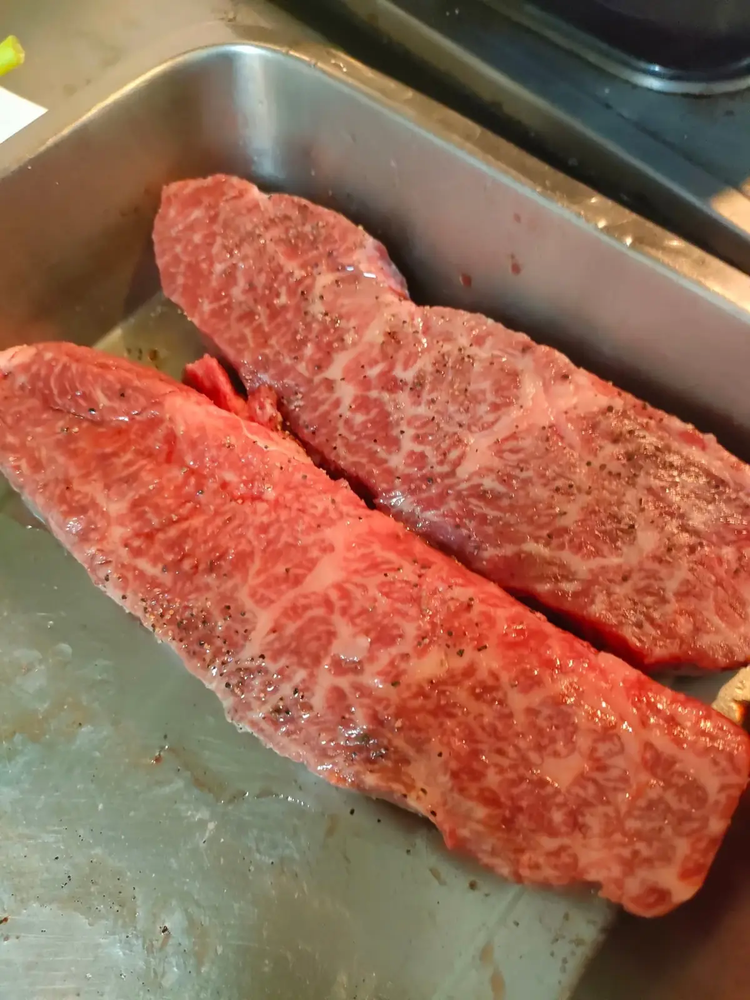

煎封、炙燒是許多肉類與海鮮料理的第一步。它的目的常被誤解為「鎖住肉汁」，實際上，它真正帶來的是香氣、色澤與表面口感。
最後更新：2026 年 10 月 11 日
食材表面在高溫下會發生梅納反應，胺基酸與糖互相作用，產生焦褐色與複雜的烘烤香氣。這就是煎牛排、煎干貝表面那層金黃焦香的來源，也是煎封最重要的價值。
「先把表面封起來肉汁就不會流失」是流傳很廣的說法，但測試顯示，煎過的肉並不會因此少流失水分。肉是否多汁，主要取決於內部溫度與靜置：煮得越熟，流失的水分越多；起鍋後靜置一小段時間，肉汁才有機會重新分布。
第一，表面要擦乾，水分會讓溫度停在水的沸點，無法上色；第二，鍋要夠熱、油要夠，食材下鍋時要聽見明顯的聲音；第三，不要一次放太多，擠在一起會讓鍋溫下降、出水；第四，下鍋後先不要頻繁翻動，等表面成形、自然脫離再翻面。
炙燒是用噴槍或明火讓表面快速受熱，常用於壽司、干貝與甜點，優點是只處理表面、內部維持原本的質地。煎封則是整面接觸熱鍋，熱量會多傳入一些內部。依食材厚度與想要的熟度，選擇適合的方式。
到府現場料理時，明火與油煙會受到住宅管理規範影響，豪宅社區常有限制。舒苑會事先確認現場條件，必要時改用電磁爐或其他設備因應，詳細情況可參考台北到府私廚的服務說明。
常見原因是表面太濕、鍋不夠熱，或一次放太多導致鍋溫下降。先擦乾表面、預熱鍋子並分批煎，就能改善。
加熱後肉的內部水分集中在中心，靜置一小段時間，肉汁才有機會重新分布，切開時比較不會大量流出。
沒有誰更好，視食材與想要的口感而定。炙燒適合薄片與生食級的食材，煎封適合需要整體加熱的肉類與魚排。
提供活動日期、人數與場地，我們將提供最適合的私廚方案與報價建議。